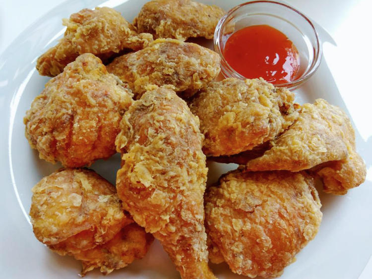

Pinoy-Style Fried Chicken Recipe

Description
Pinoy-style Fried Chicken marinated in citrus and spices and fried to golden perfection. Tasty and crunchy, it's sure to be a family favorite!
Ingredients
- ¼ cup calamansi or lemon juice
- ½ cup soy sauce
- 1 head garlic, peeled and minced
- 1 teaspoon salt
- ½ teaspoon pepper
- 3 pounds chicken legs or thighs
- ¾ cup flour
- ¼ cup corn starch
- 1 tablespoon baking powder
- canola oil
Steps
-
Marinate Chicken
In a bowl, combine chicken, calamansi juice, soy sauce, garlic, ½ teaspoon of the salt and ¼ teaspoon of the pepper. Marinate in the refrigerator for about 2 hours to a maximum 4 hours.
-
Drain chicken from marinade and pat dry.
-
Create Flour Mixture
In a shallow dish, combine flour, corn starch, baking powder, and the remaining ½ teaspoon salt and ¼ teaspoon pepper. Whisk well.
-
Dredge chicken in flour mixture to fully coat.
-
Heat pan
In a wide, thick-bottomed pan over medium heat, heat about 2 inches deep of oil to 350 F.
-
Cook Chicken
Add chicken in batches and cook, turning on sides, until golden brown, crisp, and cooked through.
-
Remove from pan and drain on a wire rack. Serve hot.